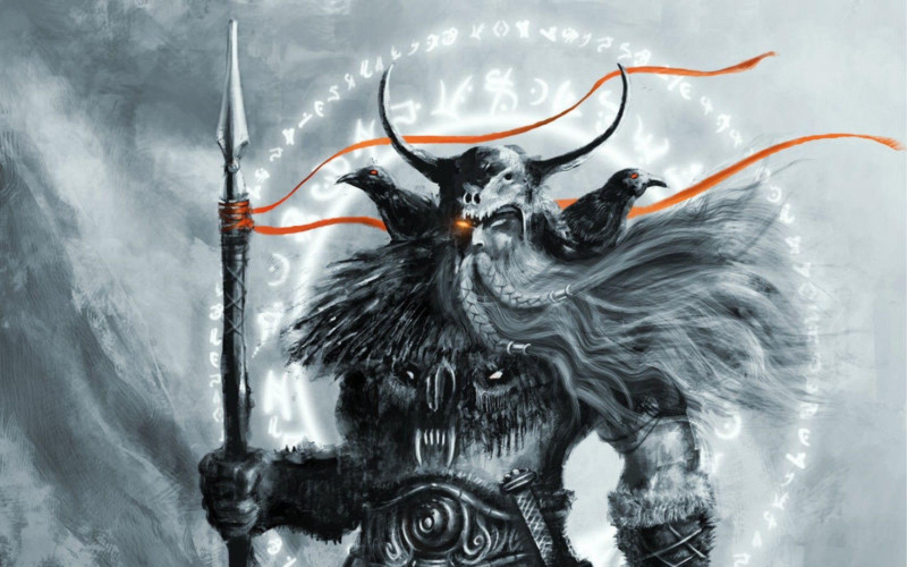
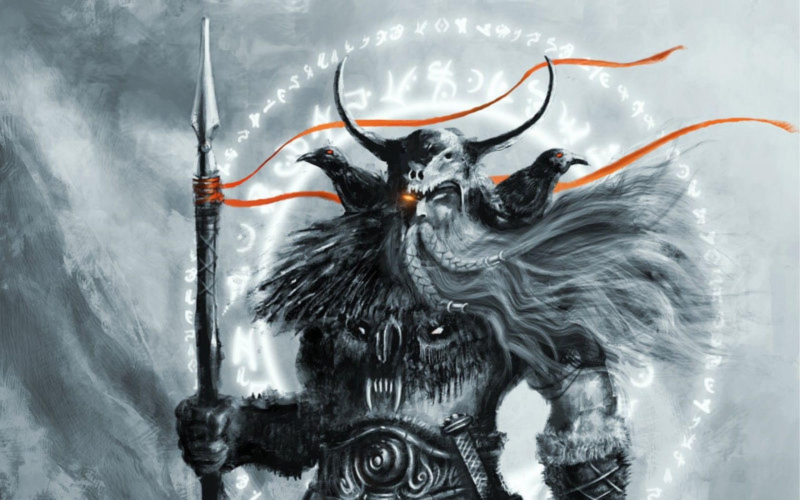

Odin the “All-Father,” chief of the Norse gods and leader of the powerful Aesir was unmatched in magic, cunning, and battle prowess. Attended by his raven familiars, he sacrificed his own eye in his quest for knowledge.
 


is where the souls of dead warriors find themselves. The souls of men that die heroically on the battlefield are either taken to Valhalla by Odin and the Valkyries.

is the ream of men, created by Odin and his two brothers Veli and Ve. They made the first man, Ask, and the first woman, Emlba, from the ash and an elm tree, and these two went on to give birth to all mankind.

is the world of the giants,and land of chaos beyond all law and order.

is a world of primordial fire filled with lava, flames and soot, and also home to the fire giant Sutr.

is a primordial world of ice, mist and snow, inhabited by ice giants.

is the world of the Vanir gods, the lesser deities in Norse mythology. They warred with the Aesir in the past, and exchanged hostages to maintain the peace.

is another heavenly world, ruled over by Freyr, the twin brother of Freya and another of the Vanir gods. It is populated by beings known as light elves.

world of the dwarves was known as both Svartalfheim and Nidavellir, and its occupants alternatively as dwarves or black elves.

Home of the dishonorable dead is where all the dishonorable dead, thieves, murderers, and those the gods and goddesses feel are not brave enough to go to Valhalla or Folkvangr.
"I'm called Grim, Raider, and Third. I am One-Eyed. I am also called Highest, and True-Guesser. I am Grimnir, and I am the Hooded One. I am Allfather, Gondlir Wand-Bearer. I have as many names as there are winds, as many titles as there are ways to die."